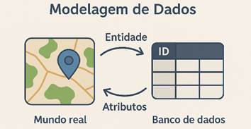
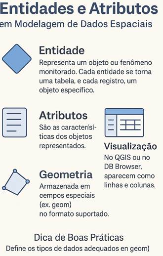
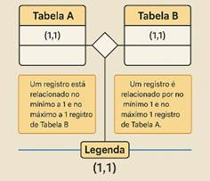
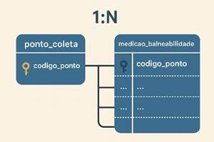
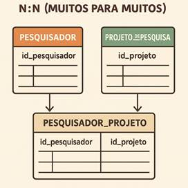
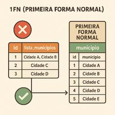

Capítulo 2: MODELAGEM DE DADOS
A modelagem de dados é um passo essencial na construção de qualquer banco de dados, pois garante a coerência, a eficiência e a integridade das informações armazenadas. No universo do geoprocessamento, em que frequentemente lidamos com conjuntos de dados complexos (vetoriais, raster e tabulares) e relações espaciais (proximidade, adjacência, sobreposição), uma boa modelagem permite que todas essas informações sejam organizadas de forma consistente, evitando redundâncias e erros. Neste capítulo, vamos estudar mais a fundo o que é modelagem, como definir entidades e atributos, de que modo surgem os relacionamentos, além de explicar a questão da normalização até a terceira forma normal, oferecendo também algumas reflexões sobre situações em que pode ser útil conhecer formas normais mais avançadas.
Quando falamos em modelagem de dados, temos em mente um processo de representar o “mundo real” ou o “mundo do projeto” dentro de um banco de dados. Em um projeto de geoprocessamento, por exemplo, precisamos refletir sobre quais são os objetos do mundo real (municípios, pontos de coleta, estradas, elementos de infraestrutura) e qual o contexto em que eles se relacionam. O termo “entidades” costuma representar esses objetos, que serão convertidos em tabelas. Cada tabela precisa ter colunas (atributos) que farão a descrição detalhada dos objetos, além de definirmos as chaves que garantem a identificação única e as referências entre tabelas.
2.1 Conceito Geral de Modelagem de Dados
A modelagem de dados corresponde ao desenho lógico do banco. É como se estivéssemos criando o “mapa” de onde ficarão armazenados determinados atributos, quais tabelas vão existir e como elas se relacionam. Fazemos isso para evitar falhas e retrabalhos, pois, sem um modelo definido, corre-se o risco de cada colaborador criar tabelas de maneira desconexa. Em geoprocessamento, isso pode resultar em camadas redundantes, tabelas com nomes confusos ou, pior, relações espaciais que não fazem sentido (por exemplo, uma tabela de cidades que não faz referência a estados ou regiões).
Antes de escrever qualquer comando SQL de criação de tabelas, devemos pensar nas entidades principais. Se o projeto for sobre balneabilidade, por exemplo, faz sentido ter uma entidade que represente os “pontos de coleta”, outra que armazene as “medições” e, possivelmente, tabelas relacionadas a “municípios” e “trechos de praia”. A partir desse levantamento conceitual, começa-se a planejar os atributos relevantes: qual é a chave primária da tabela de pontos de coleta, que tipo de dado utilizaremos para cada coluna (texto, número, data, geometria), e assim por diante.
2.2 Entidades e Atributos no Contexto do Geoprocessamento
Quando pensamos em “entidades”, estamos falando de agrupamentos que se tornarão tabelas. O termo “entidade” vem da modelagem conceitual, algo que muitas vezes se descreve em um Diagrama Entidade-Relacionamento (DER). Cada entidade representa um tipo de objeto ou de fenômeno que iremos monitorar. Assim, uma entidade “ponto_coleta” pode ser traduzida em uma tabela cujo nome seja “ponto_coleta” ou algo similar. Cada registro dessa tabela será um ponto específico, com suas informações. No QGIS ou no DB Browser, isso surgirá como linhas de dados e colunas que descrevem cada ponto.
Atributos são as colunas de cada tabela. Então, se a entidade é “ponto_coleta”, faz sentido ter atributos como código do ponto, nome ou descrição do local, coordenadas (latitude, longitude), município, data de criação do registro e assim por diante. É importante pensar, já na modelagem, em qual formato de dado cada atributo terá. No geoprocessamento, podemos precisar armazenar valores geométricos (um ponto, uma linha, um polígono) ou valores de referência espacial. Em uma abordagem com SQLite e QGIS, podemos simplesmente guardar as geometrias em um formato suportado pelo QGIS (especialmente no GeoPackage). Se estivéssemos no PostGIS, haveria a possibilidade de usar tipos especializados como “geometry(Point, 4326)”.
2.3 Relacionamentos: 1:1, 1:N e N:N
Um dos pontos mais delicados e importantes na modelagem diz respeito aos relacionamentos entre entidades. É aí que definimos como as informações se ligam. Em termos gerais, existem três tipos clássicos de relacionamentos:
-> 1:1 (um para um): Significa que cada registro de uma tabela se relaciona com, no máximo, um registro da outra tabela, e vice-versa. Esse tipo de relacionamento é relativamente pouco comum em aplicações de geoprocessamento, mas pode acontecer em cenários muito específicos, como quando se divide uma tabela em duas partes por motivos de segurança ou desempenho. Em geral, se percebemos que duas entidades têm exatamente o mesmo número de registros, uma correspondência exata, pode ser um sinal de que poderia ser uma única tabela. Ainda assim, há casos em que manter duas tabelas separadas facilita a administração ou a definição de permissões.
-> 1:N (um para muitos): Esse é o mais frequente. Uma entidade “ponto_coleta” pode ter muitas “medições”. Isto é, cada ponto de coleta existe apenas uma vez na tabela de pontos, mas pode aparecer muitas vezes na tabela que armazena os resultados de cada coleta. Em termos do DER, isso quer dizer que a tabela “ponto_coleta” possui uma chave primária (por exemplo, “codigo_ponto”), e a tabela “medicao_balneabilidade” referencia esse mesmo código como chave estrangeira. Assim, todo registro de medição aponta para o seu ponto de coleta correspondente. Esse modelo se repete em inúmeros contextos do geoprocessamento, como “município” (um) que contém “bairros” (muitos), “zona de conservação” (uma) que inclui “parcelas de amostragem” (muitas) e assim por diante.
-> N:N (muitos para muitos): Quando um registro em uma tabela pode se relacionar com diversos registros em outra, e vice-versa. Por exemplo, poderíamos ter uma tabela “pesquisador” e outra “projeto_de_pesquisa”, onde cada pesquisador pode participar de vários projetos e cada projeto pode ter vários pesquisadores. Para representar isso, normalmente criamos uma tabela intermediária. Em problemas de geoprocessamento, um caso hipotético seria se cada “área de pesquisa” (como uma UC – Unidade de Conservação) pudesse ter diversos “responsáveis técnicos”, e cada “responsável técnico” pudesse estar vinculado a várias “áreas de pesquisa”. Nesse caso, faz-se uma terceira tabela que guarda as chaves primárias das outras duas, representando o relacionamento.
Desenhar e entender esses relacionamentos no início evita confusões mais tarde. Em bancos relacionais, essa ligação é formalizada por meio de chaves primárias e chaves estrangeiras, o que leva à próxima questão: a integridade referencial.
2.4 Chaves Primárias, Chaves Estrangeiras e Integridade Referencial
As chaves em um banco de dados relacional são elementos fundamentais para garantir a organização e a integridade das informações. Elas servem como mecanismos que evitam repetições indevidas, permitem a identificação única de registros e estabelecem relações entre diferentes tabelas.
As chaves primárias (PK, do inglês *Primary Key*) são campos que identificam de forma única cada linha de uma tabela.
Por exemplo, se temos uma tabela chamada "ponto_coleta", o campo "codigo_ponto" pode ser a chave primária, desde que cada valor seja exclusivo. Isso significa que não será possível cadastrar dois pontos com o mesmo código, o que garante a rastreabilidade e evita ambiguidades durante consultas, atualizações ou análises.
Já as chaves estrangeiras (FK, de *Foreign Key*) são campos que criam ligações entre tabelas diferentes. Uma chave estrangeira aponta para a chave primária de outra tabela, criando uma relação entre os dados.
Por exemplo, a tabela "medicao_balneabilidade" pode conter um campo também chamado "codigo_ponto", que serve para indicar a qual ponto de coleta aquela medição está associada. Nesse caso, "codigo_ponto" na tabela de medições é uma chave estrangeira, pois se refere ao "codigo_ponto" da tabela de pontos. Essa ligação garante que não sejam inseridos registros de medições com códigos de pontos inexistentes.
No caso do GeoPackage — o formato de banco que usaremos no QGIS —, ele utiliza internamente o sistema SQLite, que possui suporte a chaves estrangeiras. No entanto, o QGIS ainda apresenta limitações na criação e gerenciamento dessas regras diretamente por sua interface gráfica. Embora seja possível ativar a verificação de integridade referencial no SQLite por meio do comando `PRAGMA foreign_keys = ON`, o QGIS nem sempre interpreta ou aplica essas regras de forma automática.
Portanto, neste momento do curso, não criaremos as chaves primárias e estrangeiras usando comandos SQL diretamente. Em vez disso, focaremos nas ferramentas gráficas disponíveis no QGIS, compreendendo suas capacidades e restrições. Entender como as chaves funcionam, mesmo que ainda não as implementemos completamente, é essencial para estruturar bancos de dados mais robustos nas próximas etapas da disciplina.
2.5 Normalização de Dados
A normalização é um conjunto de técnicas para organizar as colunas e as relações das tabelas de forma a reduzir a redundância e melhorar a integridade. Na prática, a normalização evita problemas do tipo “informações repetidas muitas vezes na mesma tabela, que acabam se desencontrando ou levando a dados inconsistentes”.
De modo geral, discutimos “formas normais” (FN) que correspondem a graus de maturidade desse processo. Para a maior parte das aplicações de geoprocessamento de nível técnico, chegar até a Terceira Forma Normal (3FN) costuma ser suficiente, mas vamos explicar cada uma:
2.5.1 Primeira Forma Normal (1FN):
A 1FN exige que cada atributo seja atômico, ou seja, nenhuma coluna armazene vários valores ao mesmo tempo. Por exemplo, não se deve ter uma coluna “lista_municipios” em que se guardam vários nomes de municípios separados por vírgula; o correto seria separar cada município em seu próprio registro ou, se existe relação, colocar em outra tabela ligada por chaves estrangeiras. Também se espera que cada tabela tenha uma chave primária. Em termos práticos, no geoprocessamento, isso significa evitar tabelas em que cada linha represente vários polígonos, ou que tenhamos “campos cumulativos” do tipo “coordenadas: (lat1, long1), (lat2, long2)…” quando na verdade cada feição deveria ser um registro independente ou uma geometria própria.
2.5.2 Segunda Forma Normal (2FN):
Para estarmos em 2FN, a tabela antes precisa estar em 1FN e, adicionalmente, exige-se que todos os atributos não-chave dependam da chave primária por inteiro, especialmente quando a chave primária for composta. Isso evita a chamada “dependência parcial”. Se, por exemplo, a chave primária for (codigo_ponto, data_medicao), todos os campos descritivos devem depender de ambos os valores, não apenas de um deles. Em bancos geoespaciais, essa regra ajuda a manter dados organizados quando há chaves compostas, como no caso de associar município e código de coleta, ou associar data e trecho de rio.
2.5.3 Terceira Forma Normal (3FN):
Supondo que a tabela já esteja em 2FN, a 3FN requer que não existam dependências transitivas, isto é, um atributo não pode depender de outro atributo que não seja a chave primária. Em outras palavras, cada coluna não-chave deve depender diretamente da PK, e não de outra coluna intermediária. Isso evita situações como ter um campo “nome_municipio” que dependa de uma outra coluna “codigo_municipio” que, por sua vez, depende da PK – nesses casos, o melhor é extrair esse “nome_municipio” para outra tabela (uma tabela de municípios) e fazer o relacionamento via chave estrangeira. No geoprocessamento, isso é muito comum: ao invés de replicar várias vezes o nome e o código do município em diferentes tabelas, cria-se uma única tabela “municipio” com o par (codigo, nome). Qualquer outra tabela que precise saber o nome do município faz referência ao seu código.
No contexto prático de projetos de SIG, essas três primeiras formas normais já ajudam muito, especialmente para dados alfanuméricos. Entretanto, pode haver casos em que alguma forma de desnormalização seja útil para performance em consultas espaciais, desde que planejada. Portanto, o equilíbrio entre uma boa normalização e a eficiência do banco costuma ser parte do planejamento de projetos maiores.
2.6 Considerações sobre Formas Normais Avançadas
Para a maioria dos projetos técnicos, atingir a 3FN é suficiente. Entretanto, existem formas normais adicionais, como a BCNF (Forma Normal de Boyce-Codd) e a 4FN (Quarta Forma Normal), que tratam de restrições mais específicas de dependência. Geralmente, aplicam-se em cenários complexos de bases de produção em larga escala, onde é preciso ter um controle rigoroso de toda e qualquer redundância. Em geoprocessamento, pode ocorrer a necessidade de atingir esse nível de detalhe em projetos de grande porte, mas, em contextos educacionais e técnicos, a 3FN costuma equilibrar bem clareza, consistência e facilidade de implementação.
Em contrapartida, há projetos que deliberadamente fazem a “desnormalização” de algumas tabelas, criando colunas redundantes para agilizar consultas espacialmente pesadas ou para evitar “JOINs” complexos em índices de geometria. Em geral, isso requer um planejamento cuidadoso, porque facilita algumas operações, mas pode dificultar a manutenção de dados. A decisão depende do tamanho do projeto, do número de usuários simultâneos, das análises espaciais realizadas e das exigências de desempenho.
2.7 Considerações finais de Modelagem de Banco de Dados
A modelagem de dados é a pedra fundamental de um banco de dados bem estruturado. Por meio dela, estabelecemos entidades coerentes, definimos atributos adequados, identificamos relacionamentos e asseguramos a consistência e a organização do esquema. Em projetos de geoprocessamento, essa etapa costuma ser ainda mais relevante, pois os dados espaciais são naturalmente complexos, e um bom modelo garante que não haja confusões na hora de relacionar geometrias e atributos descritivos ou de lidar com grandes volumes de informações geográficas.
Com uma modelagem em mãos, torna-se muito mais simples avançar para a criação física das tabelas, o preenchimento inicial dos dados e as consultas que fornecerão as análises necessárias.